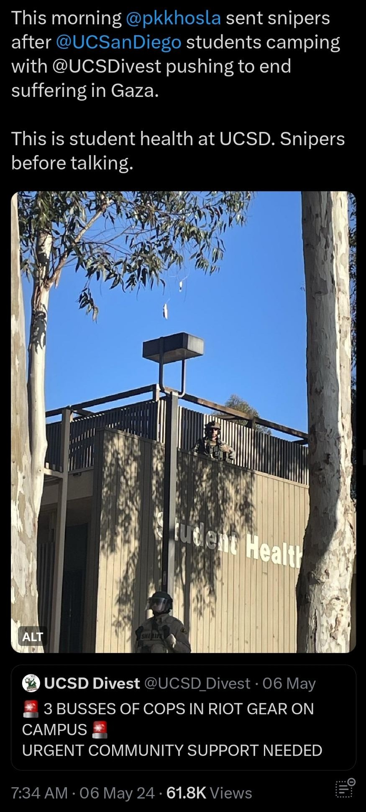

from Beatrix Morrigan, Digital Artificer
Note: I was a teaching assistant at the time of the Gaza solidarity encampment wave. when I posted this letter to my class' discussion forum, my boss removed it and got angry at me for posting it within 2 minutes of my doing so.
Open Letter to My Computer Science Students In the Wake of the Temporary Restraining Order
To my students,
You may have noticed I didn't hold office hours last week. I was on the picket line, as the union of TAs, tutors, grad student researchers, postdocs, and research scientists - AKA UAW 4811, previously known as UAW 2865, UAW 5810, and SRU-UAW - was on strike.
We were on strike because the chancellors of the University of California chose to inflict incredible violence on anti-genocide, anti-war-profiteering protesters at UCLA, UCSD, UC Irvine, and UC Santa Cruz. We were on strike because the UC changed "academic freedom of speech" policies to silence those of us speaking out against the genocide of Palestinians. These policies put my colleagues in history, communication, literature, and ethnic studies at risk for disciplinary action just for doing their jobs by discussing the history of Palestine, the rhetoric used by the US and the nation-state of Israel, or in some cases for merely speaking Arabic. We were on strike to demand safety for our Palestinian, Muslim, Arab, and Jewish colleagues and students. We were on strike to keep our labor from contributing to the military industrial complex.
The University of California twice attempted to get the Public Employment Relations Board (PERB) to issue an injunction against the strike; PERB, which has jurisdictional authority over relations between the UC and UAW 4811, denied both requests for injunction and filed a complaint against the UC, noting that UAW 4811's unfair labor practice (ULP) filings had merit. In response to PERB's denials of injunctive relief, the UC went to a court in the most conservative county in the state - Orange County - and sought a temporary restraining order (TRO) on the strike. The TRO was granted on Friday, June 7th; the TRO means that the union must halt strike activity until June 27th - 3 days before spring 2024 contract periods expire, and when the strike was predetermined to end. The TRO leaves the union with little in the way of speedy legal recourse, which destroys the efficacy of a strike threat for these ULPs. If you're curious, you can view the legal documentation here
UC Irvine law professor Veena Dubal likens the UC's circumvention of PERB to Starbucks and Amazon's attempts to undermine and circumvent the National Labor Relations Board (NLRB) as the jurisdictional authority over labor relations in private industry. PERB indeed attended the TRO hearing to object to the UC's circumvention of their authority over the matter; unfortunately, UC chose a judge that didn't care about this violation. This sets a dangerous precedent in labor law: the boss can go judge-shopping, if they don't like the decision made by the jurisdictional authority.
Background
I will not attempt to give a proper historical background of Israel-Palestine myself, and will instead refer you all to my collection of reference materials:
The important thing to say is this: an ally of the United States - the nation-state of Israel - has killed tens of thousands of innocent people. The US regime, of which I am a citizen, resident, and worker, has furnished Israel with the backup and tools to commit this slaughter; these tools are, in many cases, built by American industry and academia. The death count stopped climbing past 40,000 months ago, because the systems for keeping count of the dead have broken down.
Around the world, people have been protesting for Palestinian freedom for months, years, and decades; a month and a half ago, a new chapter of protests began, in the form of more than 170 Gaza solidarity encampments across the globe. These encampments mirror the 1980s "shantytown" protests against South African apartheid, held at Cornell, University of Michigan, MIT, and our very own UCSD. Like the South Africa solidarity shantytowns, the Gaza solidarity encampments demand boycott, divestment, and sanctions against apartheid - the apartheid imposed on Palestinians by the Israeli regime.
The Violence Inflicted by the University of California
Note: most on-the-ground cops in these altercations are armed with "less lethal" weapons; this particular cop appears to be cocking a shotgun made for rubber bullets. Despite the "less lethal" moniker, such weapons are deadly at the close range shown in the video, especially when aimed directly at people instead of ricocheted off the ground.

Cop standing on top of the UCSD Student Health Services building. The butt/stock of a rifle, which he seems to be holding pointed to his feet, is visible in front of his torso.
Image source: @gleemie on Twitter
I cannot tell you how it shattered me, to see students and colleagues brutalized, at the request of my boss' boss. I cannot tell you how dystopian it feels to be pestered to get back to work after my employer invited men with rifles onto the roof of my doctor's office. I cannot tell you how insane I feel, when my colleagues pretend like everything is normal and okay after cops pepper-sprayed a local imam and used the student center where I get lunch as a detention facility.
Why Protest UCSD?
You might be saying to yourself "well, this is all fine, but what can UCSD do for Palestine? Khosla can't snap his fingers and create world peace," which, of course, he cannot. What the protests are asking is for universities like UCSD to stop contributing to the military industrial complex (MIC) aiding and abetting the genocide of Palestinians.
Our classmates, colleagues, students, and instructors have done extensive research on the exact nature of UCSD's role in the MIC and how we can undo some of the damage done by UCSD as an agent of the MIC; here are a few highlights:
One "highlight" includes the Scripps Center for Marine Archaeology and the Center for Cyber-Archaeology, which "[digs] for Iron-Age artifacts meters away from the site of the Tantura Massacre, where between 70 and 140 Palestinians were killed when the village was ethnically cleansed during the 1948 Nakba." You can read about another way that UCSD helps to weaponize archaeology and anthropology against Palestinians in this Mondoweiss op-ed from a UCSD MD/PhD candidate.
Award Explorer
In the research funding explorer embedded below, select "Israeli Ministry of Defense" and "Government of Israel" in the "Sponsor" field. You'll find, among other grants, an award to Professor Ryan Kastner of the UCSD Computer Science & Engineering department, for a project entitled "A Practical Approach for Underwater Navigation towards Localizing Underwater Objects", funded by the Israeli Ministry of Defense. Kastner's name has been removed from the award explorer since the beginning of the university encampment wave.
You'll also find grant awards from Lockheed Martin, Raytheon, Rockwell Collins, and General Dynamics - defense contractors who manufacture drones and bombs used to kill Palestinians, and who get a say in shaping Jacobs School of Engineering (JSOE) curriculum, as well as special recruiting privileges on our campus, through the JSOE Corporate Affiliates Program
In 2014, Palestine Legal—a nonprofit legal and advocacy organization supporting Palestine activism—responded to 152 incidents of censorship, punishment, or other burdening of advocacy for Palestinian rights and received 68 additional requests for legal assistance in anticipation of such actions. In the first six months of 2015 alone, Palestine Legal responded to 140 incidents and 33 requests for assistance in anticipation of potential suppression. These numbers understate the phenomenon, as many advocates who are unaware of their rights or afraid of attracting further scrutiny stay silent and do not report incidents of suppression. The overwhelming majority of these incidents—89 percent in 2014 and 80 percent in the first half of 2015—targeted students and scholars, a reaction to the increasingly central role universities play in the movement for Palestinian rights.
The tactics used to silence advocacy for Palestinian rights frequently follow recognizable patterns. Activists and their protected speech are routinely maligned as uncivil, divisive, antisemitic, or supportive of terrorism. Institutional actors—primarily in response to pressure from Israel advocacy groups—erect bureaucratic barriers that thwart efforts to discuss abuses of Palestinian rights and occasionally even cancel events or programs altogether. Sometimes the consequences are more severe: universities suspend student groups, deny tenure to faculty, or fire them outright in response to their criticism of Israel. Meritless lawsuits and legal threats, which come from a variety of Israel advocacy groups identified in this Report, burden Palestinian rights advocacy and chill speech even when dismissed by the courts. Campaigns by such groups have even resulted in legislation to curtail Palestine advocacy, criminal investigations, and filing of charges against activists.
Empower researchers to opt out from funding sources tied to the military or oppression of Palestinians. The UC must provide centralized transitional funding to workers whose funding is tied to the military or foundations that support Palestinian oppression.
21st century genocides are committed with 21st century tools: artificial intelligence, powered by ubiquitous surveillance. In the case of the Israel Defense Force's (IDF) genocide on Palestinians, AI systems "generate new targets at a faster rate than [the IDF] attacks", turning the Targets Administrative Division into "a mass assassination factory", as reported by Yuval Abraham for +972 Magazine. The output of these AI target generation systems include both people and buildings, and the categorization of a target by one of these AI systems was treated "as an order, with no requirement to independently check why the machine made that choice or to examine the raw intelligence data on which it is based" again as reported by Yuval Abraham for +972 Magazine. To feed this killing machine the data it needs to generate more targets, Israel surveils Palestinians everywhere, all the time - by listening to phone conversations and tracking cell phone signal movements, with license plate readers and facial recognition systems, and even with malicious spyware (Pegasus, made by NSO Group) on human rights activists' phones (which isn't just used on Palestinian activists).
To say it plainly: members of our field - computer science - are building tools that systematically undermine human rights and enable killing on an unprecedented mass scale. This should be offensive to any and all of our senses of professional ethics, in the same way as a doctor who advises a torturer betrays the Hippocratic Oath, or a civil engineer who builds a bridge in a way that will kill people betrays the responsibilities of her PE license.
The buck stops here, with me. I refuse to avert my eyes from the violence that our field enables. I dove into the field of computer security to help keep people safe, whether that's from doxxing, hackers, cops, bad governments, or abusive partners. I cannot practice computer security as care work if I am ignoring the atrocities manufactured by our colleagues. Beyond that, I have a duty to my fellow human beings to fight tooth and nail for a practice of computer science that is based in compassion and moderation. I hope you - my students, colleagues, and neighbors - will join me in that pursuit, because none of us can do it alone. I'd recommend checking out No Tech for Apartheid, Tech Workers Coalition, Science for the People, or Researchers Against War
I apologize for my absence in your educations. I lay the blame for that at the feet of the university, department, government, and profession apathetic to the suffering that we cause to other people, to their dereliction of duty to our fellow man. This will anger them, no doubt - they've got deadlines and fiduciary duties to meet, haven't they? The show must go on! I'm just being difficult, lazy, bad at my job, idealistic.
And yet. Wouldn't you cry out for everything to stop, if it were your family starving in the smoldering ruins of their home, praying that they can protect the children from the next bomb? Wouldn't you scream, cry, throw things, fight ten men, if someone wanted to write your mom off as "collateral damage"? Isn't this - fighting tooth and nail to stop the machine - what we say is good and right to do, when people are committing atrocities against humankind?
I will leave you with words uttered on our sister campus, UC Berkeley, in 1964 by Mario Savio:
There's a time when the operation of the machine becomes so odious, makes you so sick at heart that you can't take part! You can't even passively take part! And you've got to put your bodies upon the gears and upon the wheels, upon the levers, upon all the apparatus -- and you've got to make it stop! And you've got to indicate to the people who run it, to the people who own it -- that unless you're free the machine will be prevented from working at all!